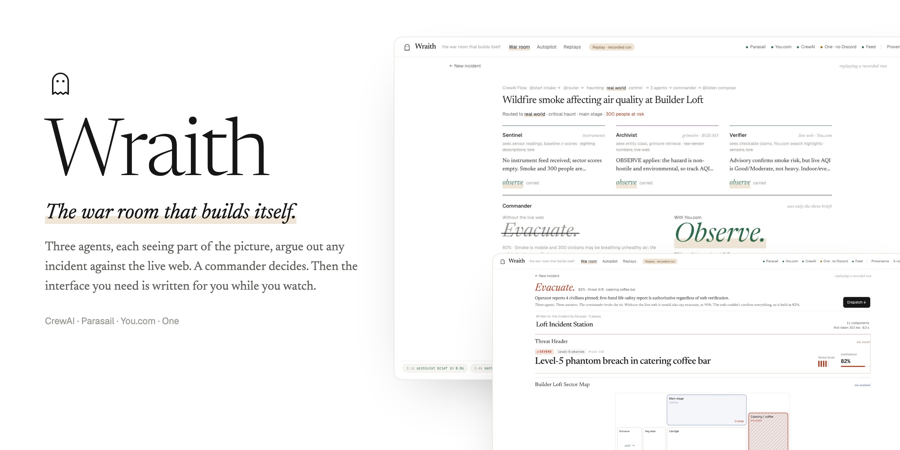

HACK WITH YOU · HALLOWEEN 2026
WRAITH
The war room that builds itself.
A CrewAI swarm with partial knowledge reads any incident — haunted or real — verifies it against the live web with You.com, and Parasail streams a bespoke, operable command station into existence, component by component. One button and One posts it to Discord.
the hosted viewer replays recordings of real runs with their original timing · clone and ./run.sh to summon live
